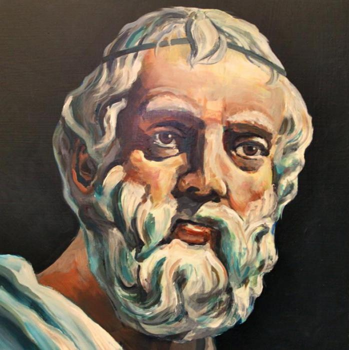

ПЛАТОН ОБ ИДЕАЛЬНЫХ И ЛОЖНЫХ ФИЛОСОФАХ
Дата публикации: 22.02.2023
«Идеальный философ»
Платон жил во время общественных преобразований, в период «осевого времени» (К. Ясперс), в «эпоху учителей», когда в разных регионах нашей планеты одновременно на арену духовной жизни вышли мудрецы, философы, педагоги и наставники, идеями которых на протяжении многих столетий пользовалось человечество. Это был период формирования духовного облика цивилизаций, когда закладывались культурные архетипы мышления и поведения людей. В этом смысле некоторые платоновские идеи по поводу философов и философии актуальны и сегодня.
Важнейшим политическим трудом Платона является «Государство», в котором изображается общественная утопия в исторической динамике. В этой работе он пытался «слепить в воображении» [5, Государство, IV 420 c], то есть смоделировать процесс появления государства и показать его сущность. Здесь Платон подробно охарактеризовал три основных сословия, которые образуют общество. Это – философы, воины и земледельцы с ремесленниками и торговцами. По мнению Платона, философы составляют верхний, элитный слой в идеальном обществе. Они осуществляют здесь функцию мозгового центра и управляют Государством, поскольку соответствуют высшему «разумному слою души». Но в реальном историческом обществе, в котором правят низшие сословия, Истина мало кого волнует по той простой причине, что у людей господствуют в душе «яростное» или «вожделеющее» начала. Все преследуют лишь земные цели, пытаясь удовлетворить свое честолюбие или с максимальным комфортом устроиться в этой жизни. В таких обществах философы оказываются без работы, не у дел.
Платон, пытаясь понять и определить природу идеального философа, начинает с важного заявления, что «некоторым людям по самой их природе подобает быть философами и правителями государства, а всем прочим надо заниматься не этим, а следовать за теми, кто руководит» [5, Государство, V 474 c]. Иначе говоря, дискуссионный вопрос о главенстве природного или социального начала Платон решает в пользу естества: философом нужно родиться, а стать им по своему произволению нельзя. Философы «редко рождаются среди людей – только как исключение» [5, Государство, VI 490 b]. Людей много, а любомудров мало, если не сказать, что очень мало. Для справки, сегодня в России философов по образованию ровно столько, сколько их выпускают во всех вузах страны. На 146 267 288 человек, проживавших в России в 2015 году, приходилось 4517 членов Российского философского общества – всего 0,003 проц. населения. Однако эти данные следует уточнить в одном отношении: можно получить надлежащее образование, стяжать максимум знаний в этой области культуры и всю жизнь преподавать данный предмет в учебных заведениях, но при этом не быть философом по своей сущности. Поэтому П.В. Алексеев включил в книгу «Философы России XIX – XX столетий» всего 2000 человек, которые внесли свой действительный вклад в развитие отечественной философии. Так кто же, по мнению Платона, есть настоящий философ?
Платон подмечает у философов природное влечение к познавательной деятельности в самом широком смысле этого слова. Он говорит: «А кто охотно готов отведать от всякой науки, кто с радостью идет учиться и в этом отношении ненасытен, того мы вправе будем назвать философом…» [5, Государство, V 575 c]. Затем Платон уточняет, что подлинный философ «вожделеет… ко всей мудрости в целом» [5, Государство, V 475 b]. Он – любомудр (др.-греч. φιλοσοφ?α, дословно: любовь к мудрости). Но философ стремится получить не просто какое-то знание и мудрость, но настоящее, истинное знание. Он «любит усматривать истину» [5, Государство, V 475 e]. Наконец, ему «предназначено вечно стремиться к божественному и человеческому в их целокупности» [5, Государство, V 486 a]. Ему «свойственны возвышенные помыслы и охват мысленным взором целокупного времени и бытия…» [5, Государство, V 486 a]. Иначе говоря, любомудр занят формированием мировоззрения, без которого не может обойтись ни один человек, если он хочет быть человеком. Для достижения всего этого у философа должна быть «прирожденная тонкость ума, своеобразие которого делало бы человека восприимчивым к идее всего сущего» [5, Государство, V 486 d].
Стремление к подлинному знанию и мудрости предполагает, что философы обязаны быть бесстрашными, сильными духом и последовательными в своих намерениях. Благодаря этим качествам они идут в постижении и отстаивании истины до самого конца, сквозь все преграды, не останавливаясь и не поворачиваясь назад, будто ратники на поле сражения или спортсмены на соревнованиях. Поэтому учитель Платона Сократ и заявляет, приводя в пример Демокрита, что «философ подобен пятиборцу» [3, IX 37]. Демокрит «ведь и в самом деле был пятиборцем в философии, так как занимался и физикой, и этикой, и математикой, и всем кругом знаний, и даже в искусствах был всесторонне опытен» [3, IX 37]. Обычный же «человек проводит нынешнюю свою жизнь в спячке и сновидениях, и, прежде чем он здесь пробудится, он, придя в Аид, окончательно погрузится в сон» [5, Государство, V 534 d].
Философы также должны быть честными, категорически отвергать любую ложь и стремиться к Истине. Как сказал пророк Давид, «уповай на Господа и делай добро; живи на земле и храни истину» [2, Пс. 36: 3]. Важно, что философ – обязательно «человек порядочный, не корыстолюбивый» [5, Государство, V 486 b]. Конечно, философ, как и обычный человек, должен есть, пить и одеваться. В идеальном обществе эта проблема решается просто – философ находится на обеспечении государства, поскольку его ничто не должно отвлекать от работы. А вот при других государственных устройствах философам, хотят они того или нет, приходится самим заботиться о хлебе насущном. Вопрос в том, что же является главной мотивацией их деятельности, деньги или Истина? Платон убежден, что философ не должен растрачивать себя в беготне за деньгами. Эта занятие подходит кому угодно, но только не ему. Позднее Христос объяснит, что «Никто не может служить двум господам: ибо или одного будет ненавидеть, а другого любить; или одному станет усердствовать, а о другом не радеть. Не можете служить Богу и маммоне» [2, Мф. 6: 24]. Какой выход можно найти из этого жизненного противоречия? Христос и здесь дает Свой ответ: «Ищите же прежде Царства Божия и правды Его, и это все приложится вам» [2, Мф. 6:33]. Иначе говоря, если философ, впрочем, как и любой другой человек, остается верным своим идеалам, любит мудрость и стремится к Истине, то материальная сторона проблемы в необходимой для жизни степени приложиться сама собой. Христос обещал взять эту часть работы на Себя.
Философ непременно обязан уподобляться Богу, занимаясь самосовершенствованием, работая над своей природой, в частности, над своим подсознанием. Ибо у всякого человека в природе есть некий изъян – вожделеющая или неразумная часть души, которая делается особенно энергичной во время сна, «когда дремлет главное, разумное и кроткое, начало души, зато начало дикое, звероподобное под влиянием сытости и хмеля вздымается на дыбы, отгоняет от себя сон и ищет, как бы удовлетворить свой норов» [5, IX 571 c]. Поэтому Платон и предупреждает, что «какой-то страшный, дикий и беззаконный вид желаний таится внутри каждого человека, даже в тех из нас, что кажутся вполне умеренными; это-то и обнаруживается в сновидениях» [5, IX 572 b]. Так вот, любомудр, в отличие от простых людей, трудится над своей вожделеющей частью души. Важная черта философской природы заключается в том, что они «звероподобную сторону своей натуры подчиняют человеческой – вернее, пожалуй, божественной…» [5, IX 589 d]. Если же этого не сделать, то, уточняет Аристотель, существование людей хороших во сне ничем не будет отличаться от жизни нечестивцев [1, Никомахова этика, I 13 1102b 3–11].
Платон досконально изображает технологию этой работы, предвосхищая рассуждения Фрейда и других психоаналитиков о сложной структуре психики [4]. Она состоит в том, что вечером накануне сна надо, во-первых, активизировать свою разумную, вернее, божественную часть души, чтоб она предохраняла и защищала человека во время сна. «Он, отходя ко сну, пробуждает свое разумное начало, потчует его прекрасными доводами и рассуждениями и таким образом воздействует на свою совесть» [5, IX 571 d]. Во-вторых, «точно так же человек укротит и яростное свое начало, для того, чтобы не отходить ко сну взволнованным и разгневанным. Укротив эти два вида свойственных ему начал и приведя в действие третий вид – тот, которому присуща разумность, – человек предается отдыху» [5, IX 572 a]. У большинства же простых людей их лучшая часть души обессилена жизнью или малоразвита, так что им «не под силу справиться с теми тварями, которые находятся у него внутри...» [5, IX 499 с]. Они – обычные рабы своих страстей, как бы сказал Платон, игрушки или куклы в руках богов и демонов.
Платон обращает внимание на главного противника духовного развития человека – его влечения и страсти. Однако те методы, которые он предлагает для работы с подсознанием, обусловлены ветхозаветной природой человека, лишь на время сна сдерживают проявление «яростного» и «вожделеющего» начал человека, поскольку не направлены на перевоспитание сердца, на онтологическое изменение естества человека. А именно «из сердца исходят злые помыслы, убийства, прелюбодеяния, любодеяния, кражи, лжесвидетельства, хуления» [2, Мф 15: 19]. В двухтысячелетней христианской традиции можно обнаружить конкретные методики и приемы работы над греховными мыслями, переживаниями и чувствами. В этом смысле философ напоминает христианского аскета-подвижника, пытающегося в своей жизни опираться на Бога, чтобы преобразовать и одухотворить всю свою природу [8].
Однако есть и специфика в процессе Богопознания. Платон предлагает для восхождения в мир идей к Богу два основных способа, диалектический и эротический. Первый связан с незаинтересованным созерцанием, когда философ, оставив чувства и весь физический мир, восходит от одной идеи к другой, пока не достигнет самой вершины, то есть Блага. Второй способ есть алогичный путь познания, когда философ посредством Эроса поднимается по «лестнице любви» к Благу, как христианский подвижник благочестия поднимается по «Лестнице Иакова» [2, Быт. 28:12-16] или «Лествице» добродетелей прп. Иоанна Лествичника, игумена Синайского монастыря, в Рай к Богу.
Искушения, подстерегающие истинного философа
Философов, живущих не в идеальном государстве, подстерегают разные искушения, среди которых плохое отношение к ним властей занимает не последнее место. Платон с горестью пишет: «по отношению к государству положение самых порядочных людей настолько тяжелое, что ничего не может быть хуже» [5, Государство, VI 438 a]. Искренне потратив на философию всю свою жизнь, они иногда выпадают из социальной жизни и становятся как бы лишними и непригодными людьми для государственной деятельности. Они, говорит Платон, «большей частью становятся очень странными, чтобы не сказать совсем негодными, и даже лучшие из них под влиянием занятий, которое ты так расхваливаешь, все же делаются бесполезными для государства» [5, Государство, V 487 d]. Дело в том, что настоящие философы должны как бы вести двойную жизнь. Они, с одной стороны, по своей сути и по роду занятий – созерцатели Бога, сами «не хотят заниматься человеческими делами; их души всегда стремятся ввысь» [5, Государство, VI 517 d]. Но, с другой стороны, им приходится жить в этом мире и время от времени заниматься полезными общественными делами. Ведь государство никогда не станет совершенным, пока у него не возникнет некая потребность и необходимость, «которая заставит этих немногочисленных философов – людей не дурных, хотя их и называют бесполезными, – принять на себя заботу о государстве, желают они того или нет (и государству придется их слушаться)» [5, Государство, VI 499 b].
Но власть имущие, по мнению Платона, часто не хотят или не могут найти философам достойного применения в обществе. Поэтому философы, живущие в историческом государстве, вынуждены сами беспокоиться о своем социальном положении, обивая пороги властей и богачей [5, Государство, V 489 b]. Увы, и мы дожили до этих времен. Сегодня философы, впрочем, как и представители других гуманитарных специальностей, мало востребованы в социальной жизни, как и во времена Платона. В глазах общества, оценивающего человека по его «деловым качествам», по умению «делать карьеру» – они лишние и бесполезные люди. Нынешнему государству нужны, говоря языком К. Маркса, «профессиональные кретины», иначе говоря, люди, знающие лишь свою профессию, ограниченные ее рамками и выполняющие свою работу «от сих до сих», а не всесторонне и гармонично развитые любители мудрости. Чем меньше у человека мировоззренческий кругозор, тем легче им управлять. Поэтому сегодня и проходит реформа высшего образования, в процессе которой под предлогом улучшения качества образования, закрывают институты, объединяют кафедры, массово сокращают сотрудников и количество часов на ту или иную гуманитарную дисциплину.
Платон лично столкнулся с этой проблемой. Его участие в государственной жизни свелось к трем неудачным попыткам убедить правителей (сицилийских тиранов Дионисия Старшего и Младшего) преобразовать современную им структуру Государства в соответствии с его скрупулёзно обдуманным, любовно выношенным и выстраданным планом. Разочарование, постигшее Платона в результате общения с правителями, выразилось в полном горестной иронии пассаже о «благородном кормчем» [5, Государство, VI 438 ae].
Но есть и другие серьезные причины, которые иногда мешают философам занять достойное место в общественной жизни. Это – порча философской натуры. Настоящий философ должен на протяжении всей своей жизни сохранять особые свойства души (мужество, великодушие, понятливость, память, стремление к знанию вообще и к мудрости), в частности, вести созерцательную жизнь. Так вот, эти самые «особенности философской натуры, когда они оказываются в плохих условиях, бывают каким-то образом виной тому, что человек бросает этим заниматься; причиной бывают и так называемые блага – богатство и всякого рода обеспеченность» [5, Государство, VI 495 a]. Эти богатства, связанные с удовольствиями, «ласкают нам душу своей привлекательностью» [5, Государство, V 538 d], уводят человека в сторону от философии. Наконец, человек может возгордиться своими способностями, исполниться высокомерия, пустой надменности и изменить своему предназначению в жизни.
По мнению Платона, остаются верными философии либо подвергшиеся общественному изгнанию (остракизму), либо болезненные, либо люди великой души – у всех этих трех категорий есть шанс уберечь свой внутренний мир, свою духовность от тлетворного, развращающего воздействия толпы, которую Платон сравнивает с диким зверем. Сократ, зная эту звериную силу толпы, долго убеждал юного честолюбивого Алкивиада из рода Алкмеонидов (Алкмеон был правнуком гомеровского Нестора) отступиться от политической карьеры. После продолжительного собеседования этот юноша обещал впредь заниматься только философией, а не политической деятельностью. Этот диалог заканчивается трогательным предостережением Сократа своему ученику: «Хорошо, если б ты остался при этом решении. Страшусь, однако, – не потому, что не доверяю твоему нраву, но потому, что вижу силу нашего города – как бы он не одолел и тебя, и меня» [5, Алкивиад, I – 135 e]. В этих словах была предсказана судьба Алкивиада и Сократа. Алкивиад, изгнанный из Афин, бесславно погибнет в 404 г. до Р.Х., спасаясь от преследователей, а Сократа одолеет «толпа» в 399 г. до Р.Х. [5, Примечания к Алкивиаду, I. – С. 533].
Еще важно напомнить, что если философ все же рискнет окунуться в политическую жизнь, то непременно столкнется с одной важной проблемой. Он будет вынужден жить по законам системы. В своих действиях, образе жизни ему придется руководствоваться жесткими правилами борьбы за власть, а не собственными принципами. Ведь, как известно, «с волками жить – по-волчьи выть». В противном случае, его просто вынудят покинуть ту или иную политическую партию. «Если человек, словно очутившись среди зверей, не пожелает сообща с ними творить несправедливость, ему не под силу будет управиться одному со всеми дикими своими противниками, и, прежде чем он успеет принести пользу государству или своим друзьям, он погибнет без пользы для себя, и для других» [5, Государство, VI 496 d]. Философ должен прекрасно понимать, что в государственных делах все, как правило, преследуют свои корыстные цели. Такой человек, «видя, что все остальные преисполнились беззакония», будет доволен, «если проживет здешнюю жизнь чистым от неправды и нечестивых дел, а при исходе жизни отойдет радостно и кротко, уповая на лучшее» [5, Государство, VI 496 e].
Лжефилософы
Речь здесь пойдет о так «называемых философах» или «лжефилософах», забывших о главном своем предназначении – служить Истине и Мудрости. Такие недостойные философы, умышленно продавая себя, как говорится, за «тридцать серебренников», оскверняют чистое имя философии и навлекают на нее упреки различного рода, «будто с ней имеют дело люди ничего не стоящие, либо же в большинстве своем заслуживающие всего самого худшего» [5, Государство, VI 495 cd].
Как же эти ложные философы появляются в философии? Дело в том, что по сравнению с обыкновенным ремеслом, как считает Платон, философия «все же гораздо больше в чести» [5, Государство, VI 495 d]. Это и привлекает к ней людей из других сфер деятельности. Они «с радостью делают скачок от ремесла к философии – особенно те, кто половчее в своем ничтожном дельце» [5, Государство, VI 495 d]. Но трудное детство, плохое воспитание, тяжелая работа приводят к тому, что в философию эти люди приходят надломившимися телом и душой: «тело у них покалечено ремеслом и производством, да и души их сломлены и изнурены грубым трудом; ведь это неизбежно» [5, Государство, VI 495 d]. Такие люди напоминают Платону «разбогатевшего кузнеца, лысого и приземистого, который недавно вышел из тюрьмы, помылся в бане, приобрел себе новый плащ и нарядился – ну прямо жених? Да он и собирается жениться на дочери своего господина, воспользовавшись его бедностью и беспомощностью» [5, Государство, VI 495 d].
Особенно важно, считает Платон, не допускать в философию людей низких и подлых. Порой они развивают свои незначительные гуманитарные способности, приобретают определенные навыки разумения и рассуждения и начинают их использовать, но не ради истины, а в корыстных целях, ради материальной выгоды. «Разве ты не замечал, – говорит Платон, – у тех, кого называют хотя и дурными людьми, но умными, как проницательна их душонка и как они насквозь видят то, что им надо? Значит, зрение у них неплохое, но оно вынуждено служить их порочности, и, чем острее они видят, тем больше совершают зла» [5, Государство, VI 519 a].
Самое существенное зло для общества и государства заключается в том, что такие «искусники» для достижения своих низких целей не брезгают никакими средствами, все перевёртывают с ног на голову, доказывая, что белое есть черное, а черное является белым. Вначале поиски противоречий в рассуждениях противника могут выглядеть простым развлечением, но затем превращаются в норму мышления и даже становятся некой специальностью. Платон отмечает: «человек этот падает так низко, что будет придерживаться мнения, будто прекрасное ничуть не более прекрасно, чем безобразное. Так же случится и со справедливостью, с благом…» [5, Государство, V 538 e]. Иначе говоря, эти лжефилософы забывают правду, извращают истину, переворачивают на сто восемьдесят градусов все духовные ценности, лишая народ традиционных религиозных, моральных и художественных ориентиров. Поэтому они – растлители и губители народа. Все это бросает тень на доброе имя философии в глазах общества.
Вместо заключения, или трагическая судьба философов в истории
Лишь в идеальном государстве, по мнению Платона, философ находится на своем месте и легко может обнаружить, что его душа сопричастна Богу, и он может вести здесь «божественную жизнь» [5, VI 498 b]. В некоторой степени можно согласиться с Платоном, что «ни одно из нынешних государственных устройств недостойно натуры философа» [5, Государство, VI 497 b]. Здесь, к примеру, можно припомнить изгнание из Афин Анаксагора и смертный приговор Сократу в античности, наложение херема на Спинозу в новое время, «философский пароход», на котором из России были высланы в Н.А. Бердяев, С.Н. Булгаков, И.А. Ильин и десятки других мыслителей. Позднее за ними последовал А.А. Зиновьев. Слова Анаксагора: «Не я потерял Афины, а афиняне потеряли меня», могут стать символом трагической судьбы истинных философов самых разных эпох. Правда, утопически надеется Платон, есть слабая надежда, что когда-нибудь руководителей государства охватит страсть к философии, и они сами станут просвещенными государственными деятелями. А пока надо отбирать способных детей для подготовки из них будущих философов, способных управлять государством или консультировать правителей в соответствии с Истиной. При этом надо отдавать «предпочтение самым надежным, мужественным и по возможности самым благообразным…» [5, Государство, V 535 a] детям, а не пускать процесс воспитания духовной элиты на самотек.